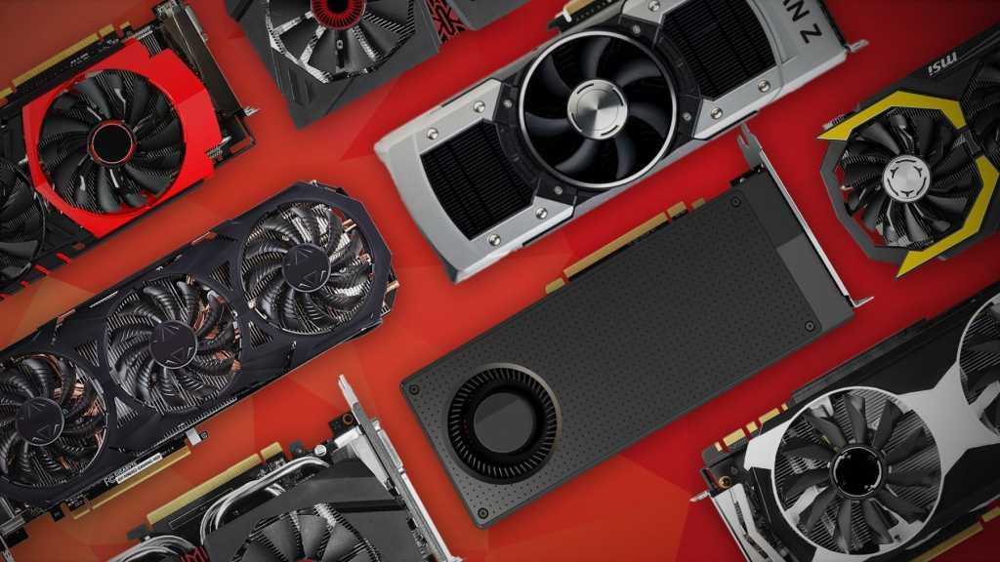

Graphics Processing Unit (GPU)

Graphics Processing Unit (also known as GPU, or graphics card) is a programmable processor
made for rendering all the images and graphics displayed on the computer's screen. The GPU can also be part of the motherboard chipset,
CPU chipset, or as an expansion card that generates images and graphics. It also helps reduce the workload of the main processor (CPU)
as it handles high-resolution graphics processing tasks and consists of multiples cores with small instruction sets.